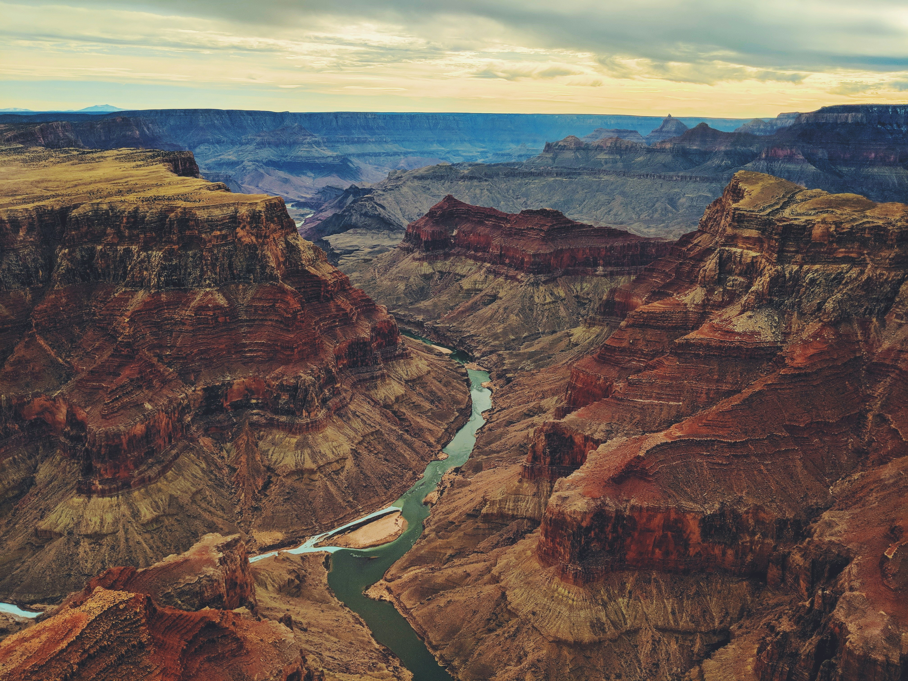

How the New 7 Wonders Were Chosen

The original Seven Wonders of the Ancient World were listed by Greek writers, and only the Great Pyramid of Giza still stands. In 2007, the New7Wonders Foundation, founded by Bernard Weber, ran a global vote to choose a modern list. Millions of people voted online and by phone, and the winners were announced in Lisbon on 7 July 2007. The result was seven monuments from five continents: the Great Wall of China, Petra, Christ the Redeemer, Machu Picchu, Chichen Itza, the Colosseum, and the Taj Mahal.
Built to Last: The Stories Behind the Stone
Each wonder reflects the civilization that built it. The Great Wall was built and rebuilt by many dynasties over centuries to defend China’s borders. Petra, the capital of the Nabataeans in modern Jordan, was carved directly into rose-colored sandstone cliffs. The Inca built Machu Picchu high in the Andes, using precisely cut stones that fit together without mortar. The Maya designed the pyramid of Chichen Itza around the sun, and its staircase casts a serpent-shaped shadow during the equinox. The Romans completed the Colosseum around 80 AD as an arena for tens of thousands of spectators.
Monuments of Love and Faith
Two of the wonders were built for very personal reasons. The Taj Mahal in Agra, India, was commissioned by Emperor Shah Jahan as a tomb for his wife, Mumtaz Mahal, and is famous for its white marble and perfect symmetry. Christ the Redeemer, which overlooks Rio de Janeiro from Corcovado Mountain, was completed in 1931. It stands about 30 meters tall and has become a symbol of Brazil and of Christianity worldwide.